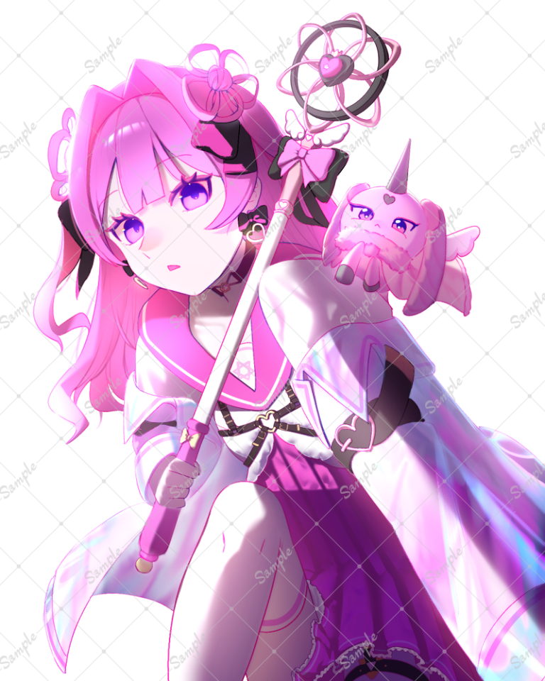
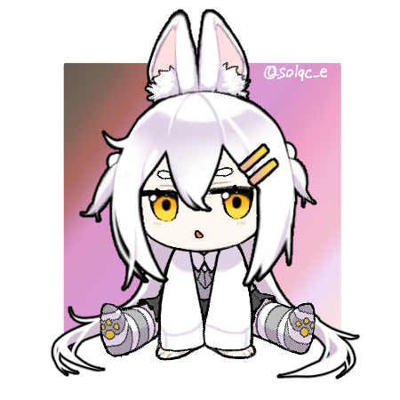

Commission · Client: Yuno Yuno · 2026-07-07
Selected Works — Illustration & Character
キャラクターの表情や、物語の気配を大切に。
これまでに描いた作品をご紹介します。
気になるジャンルから、作品をご覧ください。




このジャンルの作品は、ただいま準備中です。新しい作品を楽しみにお待ちください。
イメージが決まっていなくても大丈夫です。ご希望を伺いながら、一緒に形にしていきます。
制作を相談する